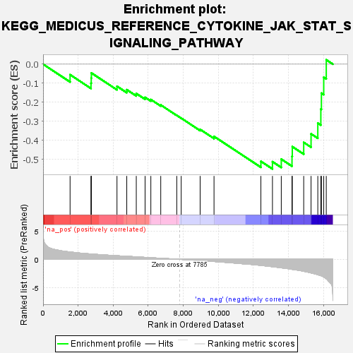

| | | Dataset | all_genes |
| Phenotype | NoPhenotypeAvailable |
| Upregulated in class | na_neg |
| GeneSet | KEGG_MEDICUS_REFERENCE_CYTOKINE_JAK_STAT_SIGNALING_PATHWAY |
| Enrichment Score (ES) | -0.549304 |
| Normalized Enrichment Score (NES) | -1.5821095 |
| Nominal p-value | 0.012658228 |
| FDR q-value | 0.28975832 |
| FWER p-Value | 0.979 |
Table: GSEA Results Summary

Fig 1: Enrichment plot: KEGG_MEDICUS_REFERENCE_CYTOKINE_JAK_STAT_SIGNALING_PATHWAY
Profile of the Running ES Score & Positions of GeneSet Members on the Rank Ordered List
| SYMBOL | RANK IN GENE LIST | RANK METRIC SCORE | RUNNING ES | CORE ENRICHMENT | | 1 | STAT1 | 1541 | 1.308 | -0.0552 | No |
| 2 | IL13RA1 | 2735 | 0.947 | -0.0999 | No |
| 3 | IFNAR1 | 2748 | 0.945 | -0.0731 | No |
| 4 | IFNAR2 | 2756 | 0.942 | -0.0461 | No |
| 5 | IFNGR2 | 4217 | 0.639 | -0.1159 | No |
| 6 | STAT3 | 4775 | 0.539 | -0.1339 | No |
| 7 | JAK2 | 5318 | 0.443 | -0.1538 | No |
| 8 | IFNGR1 | 5821 | 0.351 | -0.1740 | No |
| 9 | STAT5B | 6149 | 0.289 | -0.1854 | No |
| 10 | JAK1 | 6714 | 0.192 | -0.2139 | No |
| 11 | STAT6 | 7628 | 0.032 | -0.2683 | No |
| 12 | STAT2 | 7881 | -0.017 | -0.2831 | No |
| 13 | IL6ST | 8961 | -0.217 | -0.3421 | No |
| 14 | IL12A | 9753 | -0.385 | -0.3788 | No |
| 15 | PIM1 | 12427 | -1.076 | -0.5094 | No |
| 16 | STAT4 | 13087 | -1.306 | -0.5113 | Yes |
| 17 | IL7 | 13590 | -1.499 | -0.4980 | Yes |
| 18 | EPOR | 14202 | -1.773 | -0.4833 | Yes |
| 19 | IL12RB1 | 14219 | -1.779 | -0.4325 | Yes |
| 20 | IL7R | 14870 | -2.116 | -0.4102 | Yes |
| 21 | IL4R | 15289 | -2.412 | -0.3652 | Yes |
| 22 | IL6R | 15674 | -2.718 | -0.3093 | Yes |
| 23 | IL12RB2 | 15847 | -2.893 | -0.2354 | Yes |
| 24 | IL15RA | 15880 | -2.929 | -0.1520 | Yes |
| 25 | IL15 | 16012 | -3.134 | -0.0686 | Yes |
| 26 | STAT5A | 16157 | -3.433 | 0.0228 | Yes |
Table: GSEA details [plain text format]
Fig 2: KEGG_MEDICUS_REFERENCE_CYTOKINE_JAK_STAT_SIGNALING_PATHWAY: Random ES distribution
Gene set null distribution of ES for KEGG_MEDICUS_REFERENCE_CYTOKINE_JAK_STAT_SIGNALING_PATHWAY